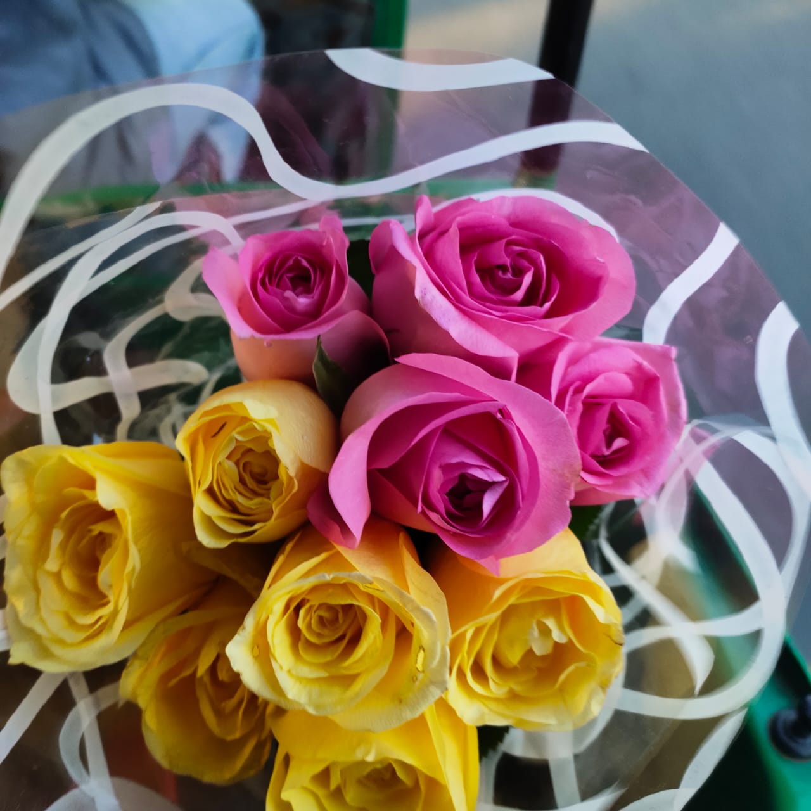

My love, I am extremely apologetic for the grave mistake of being ignorant towards your feelings. My nature of avoiding confrontation with your feelings has caused you excruciating pain and the fact that I slept while you were having an anxiety attack is a shame upon my existence. However, being the pathetic little man I am, I humbly request you to find it in your heart to forgive me, for I love you a lot and promise that in future there would be no such cause for you to ever experience 17th/18th February 2026 ever again. I would love to ask you out on a Sushi date at Majnu Ka Tila on Monday, i.e the 23rd of February. Kindly accept it ma'am.
